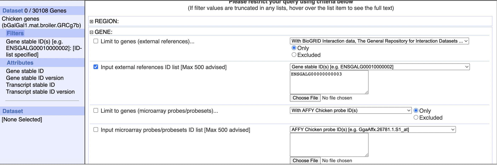

set.seed(0)
library(SingleCellExperiment)
library(scran)
library(scater)
library(dplyr)
library(biomaRt)A tale of two chickens
Work
Omics
Useful
Paper Replication
Life lesson: üêî ‚â† üêì
Today we’ll be looking at the paper “A single-cell transcriptomic atlas of the developing chicken limb”, by Feregrino et al. (2019) - specifically, we’ll use this dataset from the Single Cell Expression Atlas. However, we’re not actually gonna read their paper, we’re just gonna do random stuff!
Spoilers: We don’t get much work done, due to a mystery involving chicken breeds in Ensembl.
Loading the Data
file.path = './localdata/Datasets/E-CURD-13/'
counts.mat <- Matrix::readMM(
paste0(
file.path,
'E-CURD-13-quantification-raw-files/',
'E-CURD-13.aggregated_filtered_counts.mtx'
)
)
dim(counts.mat)- 13645
- 7688
counts.rows <- read.csv(
paste0(
file.path,
'E-CURD-13-quantification-raw-files/',
'E-CURD-13.aggregated_filtered_counts.mtx_rows'
),
sep='\t',
header=FALSE
)$V1
counts.cols <- read.csv(
paste0(
file.path,
'E-CURD-13-quantification-raw-files/',
'E-CURD-13.aggregated_filtered_counts.mtx_cols'
),
sep='\t',
header=FALSE
)$V1meta.data <- read.csv(
paste0(
file.path,
'ExpDesign-E-CURD-13.tsv'
),
sep='\t',
header=TRUE,
row.names='Assay'
)
colnames(meta.data)- 'Sample.Characteristic.organism.'
- 'Sample.Characteristic.Ontology.Term.organism.'
- 'Sample.Characteristic.age.'
- 'Sample.Characteristic.Ontology.Term.age.'
- 'Sample.Characteristic.developmental.stage.'
- 'Sample.Characteristic.Ontology.Term.developmental.stage.'
- 'Sample.Characteristic.organism.part.'
- 'Sample.Characteristic.Ontology.Term.organism.part.'
- 'Sample.Characteristic.sampling.site.'
- 'Sample.Characteristic.Ontology.Term.sampling.site.'
- 'Sample.Characteristic.genotype.'
- 'Sample.Characteristic.Ontology.Term.genotype.'
- 'Sample.Characteristic.disease.'
- 'Sample.Characteristic.Ontology.Term.disease.'
- 'Factor.Value.replicate.'
- 'Factor.Value.Ontology.Term.replicate.'
- 'Factor.Value.inferred.cell.type...ontology.labels.'
- 'Factor.Value.Ontology.Term.inferred.cell.type...ontology.labels.'
rownames(counts.mat) <- counts.rows
colnames(counts.mat) <- counts.cols# Make sure the metadata is lined up with the count matrix
identical(meta.data$Assay, colnames(counts.mat))
TRUE
sce <- SingleCellExperiment(
assays=list(counts=counts.mat),
colData=meta.data
)sceclass: SingleCellExperiment
dim: 13645 7688
metadata(0):
assays(1): counts
rownames(13645): ENSGALG00000000003 ENSGALG00000000011 ...
ENSGALG00000055127 ENSGALG00000055132
rowData names(0):
colnames(7688): SAMN11526603-AAAAAAATTCAG SAMN11526603-AAAAACAAGTAG ...
SAMN11526603-TTTTTTTGTGAG SAMN11526603-TTTTTTTTTTTT
colData names(18): Sample.Characteristic.organism.
Sample.Characteristic.Ontology.Term.organism. ...
Factor.Value.inferred.cell.type...ontology.labels.
Factor.Value.Ontology.Term.inferred.cell.type...ontology.labels.
reducedDimNames(0):
mainExpName: NULL
altExpNames(0):I wanted to perform QC using mitochondrial genes. This should have been as easy as reusing my code for humans with a few tweaks to look for chicken genes instead. However, when I try to use biomaRt I get no result.
mart <- useDataset("ggallus_gene_ensembl", useMart("ensembl"))
gene.to.symbol.map <- getBM(
filters="ensembl_gene_id",
attributes=c(
"ensembl_gene_id",
"hgnc_symbol"
),
values=rownames(sce),
mart=mart
)
gene.to.symbol.map| ensembl_gene_id | hgnc_symbol |
|---|---|
| <lgl> | <lgl> |
So I went directly to the biomaRt web interface, and searched for a gene I knew was in the dataset: ENSGALG00000000003

However, you can see that in the top left corner it reports no results! If you look closely, you can see that the example search is with ENSGALG00010000002, which does have results - and in fact adding 10,000,000 to gene numbers tends to create a valid findable gene:
These genes don’t seem to be related to eachother though.
If we filter for mitochondrial genes:
Then we do get results:
Which all have ids greater than 10,000,000. This list is not comprehensive, I can find (off biomaRt) another mitochondrial gene, whose id is less than 10,000,000:
The avian genome encodes the same set of genes (13 proteins, 2 rRNAs and 22 tRNAs) as do other vertebrate mitochondrial DNAs and is organized in a very similar economical fashion.
– “Sequence and gene organization of the chicken mitochondrial genome: A novel gene order in higher vertebrates”, Desjardins and Morais (1990)
From the above, we can see that there should be 24 mt-rRNA and mt-tRNA in total, which is in fact what we find with biomaRt! (The previous image only shows 10, but that’s because it only shows 10 per page - the total amount found was 24).

These two images seem to conclusively show that the gene sets are different; the genes are in a similar place but have different names between the two tracks.
From this, we can hypothesize that the ids less than 10,000,000 are out of date, presenting some frustration for using the data we have. Can we prove it?

No: the gene has never changed its ID (which is a good thing for sanity purposes but is not ideal for this specific confusion).
However, it seems like there are multiple chicken genomes in Ensembl:
This proves, conclusively, that there are at least two breeds of chicken. And I was looking at the wrong one.
The question then becomes - how do we actually find the right one? We can get a list of all the possible biomart-queryable datasets:
all.datasets <- listDatasets(mart = mart)
all.datasets[70:80,]| dataset | description | version | |
|---|---|---|---|
| <I<chr>> | <I<chr>> | <I<chr>> | |
| 70 | fheteroclitus_gene_ensembl | Mummichog genes (Fundulus_heteroclitus-3.0.2) | Fundulus_heteroclitus-3.0.2 |
| 71 | gaculeatus_gene_ensembl | Stickleback genes (BROAD S1) | BROAD S1 |
| 72 | gevgoodei_gene_ensembl | Goodes thornscrub tortoise genes (rGopEvg1_v1.p) | rGopEvg1_v1.p |
| 73 | gfortis_gene_ensembl | Medium ground-finch genes (GeoFor_1.0) | GeoFor_1.0 |
| 74 | ggallus_gene_ensembl | Chicken genes (bGalGal1.mat.broiler.GRCg7b) | bGalGal1.mat.broiler.GRCg7b |
| 75 | ggorilla_gene_ensembl | Gorilla genes (gorGor4) | gorGor4 |
| 76 | gmorhua_gene_ensembl | Atlantic cod genes (gadMor3.0) | gadMor3.0 |
| 77 | hburtoni_gene_ensembl | Burton's mouthbrooder genes (AstBur1.0) | AstBur1.0 |
| 78 | hcomes_gene_ensembl | Tiger tail seahorse genes (H_comes_QL1_v1) | H_comes_QL1_v1 |
| 79 | hgfemale_gene_ensembl | Naked mole-rat female genes (HetGla_female_1.0) | HetGla_female_1.0 |
| 80 | hhucho_gene_ensembl | Huchen genes (ASM331708v1) | ASM331708v1 |
But this does not contain the option to choose anything other than bGalGal1.mat.broiler.GRCg7b, the paternal White leghorn layer chicken.
Online, we can find an archived version of biomaRt that grants access:

And the results line up with prior expectations.
So if we use the biomaRt R interface with an archived host, maybe we can get the Red Junglefowl’s genes?
mart.archive <- useMart("ensembl", host="https://apr2022.archive.ensembl.org")all.datasets <- listDatasets(mart = mart.archive)
all.datasets[70:80,]| dataset | description | version | |
|---|---|---|---|
| <I<chr>> | <I<chr>> | <I<chr>> | |
| 70 | fheteroclitus_gene_ensembl | Mummichog genes (Fundulus_heteroclitus-3.0.2) | Fundulus_heteroclitus-3.0.2 |
| 71 | gaculeatus_gene_ensembl | Stickleback genes (BROAD S1) | BROAD S1 |
| 72 | gevgoodei_gene_ensembl | Goodes thornscrub tortoise genes (rGopEvg1_v1.p) | rGopEvg1_v1.p |
| 73 | gfortis_gene_ensembl | Medium ground-finch genes (GeoFor_1.0) | GeoFor_1.0 |
| 74 | ggallus_gene_ensembl | Chicken genes (GRCg6a) | GRCg6a |
| 75 | ggorilla_gene_ensembl | Gorilla genes (gorGor4) | gorGor4 |
| 76 | gmorhua_gene_ensembl | Atlantic cod genes (gadMor3.0) | gadMor3.0 |
| 77 | hburtoni_gene_ensembl | Burton's mouthbrooder genes (AstBur1.0) | AstBur1.0 |
| 78 | hcomes_gene_ensembl | Tiger tail seahorse genes (H_comes_QL1_v1) | H_comes_QL1_v1 |
| 79 | hgfemale_gene_ensembl | Naked mole-rat female genes (HetGla_female_1.0) | HetGla_female_1.0 |
| 80 | hhucho_gene_ensembl | Huchen genes (ASM331708v1) | ASM331708v1 |
Victory! GRCg6a is the Red Junglefowl.
mart.archive <- useDataset(
"ggallus_gene_ensembl",
useMart(
"ensembl",
host="https://apr2022.archive.ensembl.org"
)
)
gene.to.symbol.map <- getBM(
filters="ensembl_gene_id",
attributes=c(
"ensembl_gene_id",
"hgnc_symbol"
),
values=rownames(sce),
mart=mart.archive
)head(gene.to.symbol.map)| ensembl_gene_id | hgnc_symbol | |
|---|---|---|
| <chr> | <chr> | |
| 1 | ENSGALG00000000003 | PANX2 |
| 2 | ENSGALG00000000011 | C10orf88 |
| 3 | ENSGALG00000000038 | |
| 4 | ENSGALG00000000044 | WFIKKN1 |
| 5 | ENSGALG00000000055 | |
| 6 | ENSGALG00000000059 |
Double victory!
gene.to.symbol.map[
apply(
gene.to.symbol.map["hgnc_symbol"],
1,
function(x) grepl("^MT-", x)
),
]| ensembl_gene_id | hgnc_symbol | |
|---|---|---|
| <chr> | <chr> | |
| 9151 | ENSGALG00000032142 | MT-CO1 |
| 11684 | ENSGALG00000043768 | MT-ND2 |
All that for just two genes. Oh well. We’ll analyze this dataset in a future blog post.
As a learning experience, I would recommend always specifying a specific Ensembl version when querying biomaRt, since evidently code that used to work will break if they change the default breed.
Also, it’s a bit frustrating that I can’t specify the breed in biomaRt, because Ensembl still has the data for the other breed - it’s just for some reason not accessible via biomaRt which only presents a single breed to query.
But why?
I’m left with one question: why are there two chickens? Why is the junglefowl no longer on modern BioMart? What is their relation? (Ahhhhhhhhhhhh)
I did manage to find a summary of some chicken breeds, but it did not resolve my question.
To investigate further, I went through the history of the Ensembl versions:
- Version 108 (current, October 2022): Default chicken is
bGalGal1.mat.broiler.GRCg7b- But when we look at the chicken breeds page they list it as
bGalGal1.pat.whiteleghornlayer.GRCg7w
- But when we look at the chicken breeds page they list it as
- Version 107 (July 2022): Default chicken is
bGalGal1.mat.broiler.GRCg7b- Although in this version they call it the “maternal broiler”
- And when we look at the chicken breeds page they list it as
bGalGal1.pat.whiteleghornlayer.GRCg7w
- Version 106 (April 2022): Default chicken is
GRCg6a- And there is no chicken breeds page
It seems like the chicken breeds pages don’t list the default breed on it, and that all of the genes for GRCg7w are listed with IDs beginning with 00015 (such as here). This is in contrast with the 00010 beginning for GRCg7b and GRCg6a.
Thus, we can say this:
- There are three chickens in play1,
GRCg6a(“red junglefowl”),GRCg7w(“white leghorn”), andGRCg7b(“maternal broiler”). GRCg7b(“maternal broiler”) is the current defaultGRCg6a(“red junglefowl”) used to be the default back in version 106
Looking up “maternal broiler”, I am able to find this page talking about the bGalGal1.mat.broiler.GRCg7b genome. It lists its breed as specifically being:
Breed: Cross of Broiler mother + white leghorn layer father
This only deepens the mystery. Why did we go from Red Junglefowl to Maternal Broiler? How does the White Leghorn come into the picture, and is it related to why GRCg7w is a crossbreed?
The chicken has been the most studied bird. It serves as a model organism for basic and biomedical science, and is one of the most commonly consumed food sources for humans.
This trio of samples was collected to create a high-quality reference genome for two haplotypes.
The female offspring (
bGalGal1) is a cross between a modern broiler breeder mother (bGalGal2) and white Leghorn father (bGalGal3).Breeding and sample collection was conducted by Nick Anthony at the University of Arkansas, in coordination with Wesley Warren, Ron Okimoto, Hans Cheng, and Rachel Hawken.
Blood from these samples were used to create high-quality reference genome assemblies of each haplotype, coordinated by Erich Jarvis, Wesley Warren, and Olivier Fedrigo, at the Rockefeller University Vertebrate Genome Lab, as part of the Vertebrate Genomes Project (VGP) and the Genome Reference Consortium (GRC).
– Webpage for
GRCg7b
The webpage identifies GRCg7b as coming from bGalGal3 and GRCg7w as coming from bGalGal2.
It seems bGalGal1 does not have its own assembly, as the list of chicken assemblies does not include it. The most information I can get as to bGalGal1 is on its sample page, which is significantly less detailed than its parent’s. As an aside, it seems like a lot of new chicken assemblies were made in 2022, which may be interesting for the future.
According to the page for bGalGal3, the GRCg7w assembly has been updated to GRCg7w_WZ. I believe this did not require getting more real-world data, but rather was a re-sequencing (re-assembling) of the collected data.
Tracking the history of the events
On the Ensembl blog, we can get a changelog of what has happened:
New Assemblies and/or Annotation
Vertebrates
- Reannotation of the reference assembly for pig (
Sscrofa11.1)- Reannotation of chicken assembly (
GRCg6a)- Annotation of 2 new GRC chicken assemblies (
GRCg7wandGRCg7b)- Chicken reference will be changed from
GRCg6atoGRCg7b- Assembly and Gene set will be updated for Tropical clawed frog (Xenopus tropicalis): Xenopus tropicalis v9.1 to UCB Xtro 10.0
All in all, this has been a really confusing adventure, but I think I learned something…
References
Desjardins, Paul, and Réjean Morais. 1990. “Sequence and Gene Organization of the Chicken Mitochondrial Genome: A Novel Gene Order in Higher Vertebrates.” Journal of Molecular Biology 212 (4): 599–634. https://doi.org/https://doi.org/10.1016/0022-2836(90)90225-B.
Feregrino, C, F Sacher, Parnas O, and P Tschopp. 2019. “A Single-Cell Transcriptomic Atlas of the Developing Chicken Limb.” BMC Genomics.
Footnotes
Despite my earlier belief in this being a two-chicken conundrum!↩︎